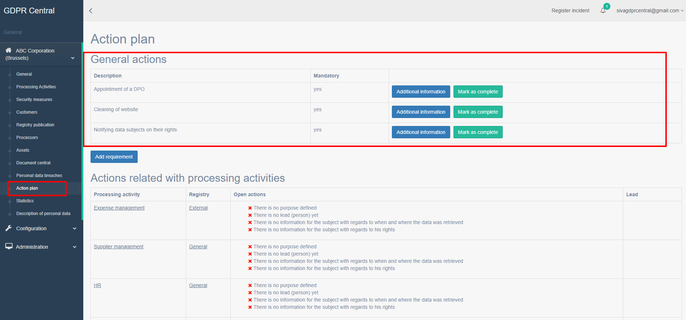

How can I add actions to action plan?¶
Understanding Action Plans¶
Action Plans allow you to ensure all actions (i.e. tasks to be performed within GDPR Central) are generated and listed in a central place, so they are not missed. This is a key functionality of the tool which allows you to be in control of all key tasks to be performed as well as ensure nothing is missed.
These action plans are grouped by areas they relate to within GDPR Central and are displayed as the following sections:
General Actions – This lists all actions to be performed by Data Protection Officers.
To add a new action plan, perform the following steps:
Login to GDPR Central using your credentials if not already logged in.
In the left pane, under your organization, click Action Plan.
The Action Plan list screen appears.
You have all actions to be performed by Data Protection Officers listed under General actions section.
Click Add requirement button to add a new action plan.
The New Requirement page appears.
Processing Activity Details¶ Field
Description
Completed
Select whether this requirement is already completed or not.
Description
Enter a description for this new requirement.
Help
??
Mandatory
Select whether this requirement is mandatory.
Decision documentation
Enter details of decision documentation.
Due date
Select the due date by which this new requirement has to be completed.
After completing the information, click Create Requirement button. You get the action plan list page along with the newly created action plan listed.
To act on an action plan, perform the following steps:
Login to GDPR Central using your credentials if not already logged in.
In the left pane, under your organization, click Action Plan.
The Action Plan list screen appears.
You have all actions to be performed by Data Protection Officers listed under General actions section.
To mark an action as complete click Mark as complete button beside the action. The action will be displayed under Completed actions section in this screen.
To enter additional information for a matter, click Additional Information.
General Actions – This lists all actions to be performed by Data Protection Officers.
Actions related with processing activities – All the open actions relating to processing activities along with what exactly needs to be resolved are listed here. To resolve open actions under this section, you can click on the processing activity link and resolve the open actions (enter missing information) and click save.
Actions related to processors – All the open actions relating to processors along with what exactly needs to be resolved are listed here. To resolve open actions under this section, you can click on the processor link and resolve the open actions (enter missing information) and click save.
Actions related to assets – All the open actions relating to assets along with what exactly needs to be resolved are listed here. To resolve open actions under this section, you can click on the asset link and resolve the open actions (enter missing information) and click save.
Jira actions – If integration with Jira has been done through Configuration > General section, any open actions from Jira along with what exactly needs to be resolved are listed here. To resolve open actions under this section, you can click on the action link and resolve the open actions (enter missing information) and click save.
Security issues – All the open actions relating to security along with what exactly needs to be resolved are listed here. To resolve open actions under this section, you can click on the security action link and resolve the open actions (enter missing information) and click save.
Completed actions – All actions marked as completed under General Actions are listed here.